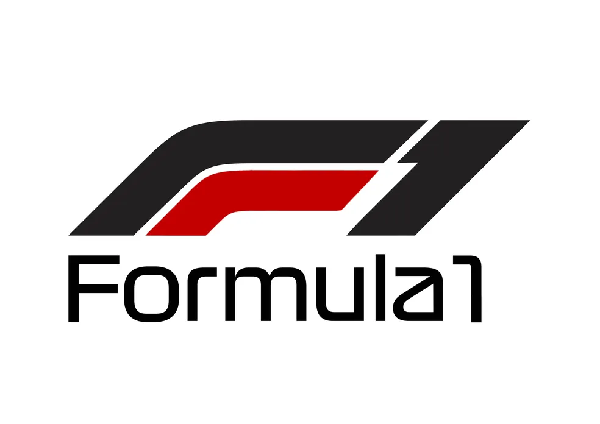

História da Fórmula 1
A Fórmula 1 teve seu início em 1950 e é considerada a principal categoria de automobilismo mundial. Com o passar dos anos, se consolidou como uma competição de alta tecnologia e velocidade, atraindo milhões de fãs ao redor do mundo. Grandes equipes e pilotos se destacaram ao longo da história da F1, conquistando títulos e tornando-se lendas do esporte.
Com a evolução dos carros e a introdução de novas tecnologias, a Fórmula 1 continua a ser uma referência de inovação, velocidade e competitividade.
Grandes Pilotos da Fórmula 1
Ayrton Senna foi um dos maiores pilotos da história da Fórmula 1, conquistando 3 campeonatos mundiais e se tornando um ícone do automobilismo.
Ayrton Senna
Max Verstappen é um dos pilotos mais jovens e talentosos da atualidade, conquistando vitórias impressionantes e se destacando no campeonato mundial.
Max Verstappen
Principais Equipes da Fórmula 1
As principais equipes da Fórmula 1 incluem Ferrari, Mercedes, Red Bull Racing, McLaren e muitas outras, que competem a cada temporada em busca do título mundial.
.png)
.png)
.png)
.png)
Títulos da Fórmula 1
Os títulos da Fórmula 1 são conquistados por pilotos e equipes com grande habilidade e performance. Alguns dos maiores campeões incluem Michael Schumacher, Lewis Hamilton e Juan Manuel Fangio.
Cada título conquistado representa uma temporada de trabalho árduo, superação de desafios e inovação tecnológica.
Os Carros Mais Potentes da Fórmula 1
Os carros de Fórmula 1 são verdadeiras máquinas de alta performance, projetadas para atingir velocidades impressionantes e realizar curvas em altíssima velocidade.
Modelos como o Ferrari SF90, o Mercedes W12 e o Red Bull RB16B são exemplos de carros que dominaram as pistas nos últimos anos.